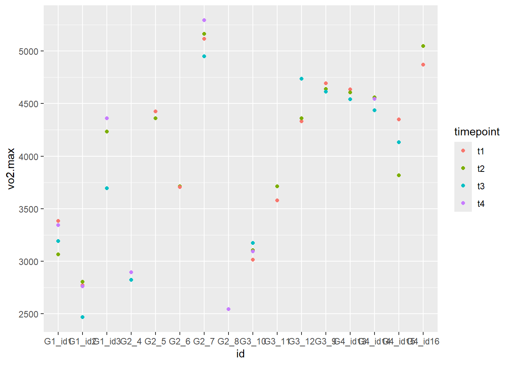

1 Reliabilitet
2 Assignment 1: Reliability and tools for reproducible data science
The purpose of this assignment is to present estimates of reliability of measures collected in the physiology lab. A second purpose is to use tools for reproducible data science. The report that you are expected to hand in therefore has some strict requirements in its format (see assignment description). The assignment is a group assignment and at least three students are expected to contribute to each report.
2.1 Elements of the report
Importantly, the report should contain:
- At least one table (created from your data)
- At least one figure (created from your data), and
- data presented in the text.
- The report should use a bibliography file to manage references.
3 Oppgave 1: Reliabilitet og verktøy for å reprodusere data
Hensikten med denne rapporten er å presentere estimater for reliabilitet av data samlet i fysiologisk testlab ved Høgskolen i Innlandet. Vi har gjennomført VO2max tester på sykkel der 16 deltakere har gjennomført 2 eller 4 tester i løpet av tre uker. De to første testene ble gjennomført med ca. 24 timers mellomrom i uke en. De to siste testene ble gjennomført med ca. 48 timers mellomrom i uke tre. Vi har brukt Rstudio for å analysere dataen og få svar på om våre tester er reliable.
protokoll (+ preparations of the participant)
Test protokoll for VO2max test
Test protokoll for VO2maks testingen forteller hvordan testene ble gjennomført. Et plotteark i exel er klargjøort av testleder før man kommer til labben ved å fylle inn informasjon man vet om deltaker på forhånd. I labb forbreder testleder ustyr og maskiner på en standardisert måte hver test. Det første som gjøres i labben er at testleder tar på seg labfrakk som henger i labben, og sørger for at biosen(laktatmåler) er skrudd på og se om kalibreringen måler 12mmol/la. Ved “kalibrerings error” byttes standardveske. Vyntusen skal kalibreres av gasskalibrering og volum kalibrereing mens gassbeholderen er open og trippel står i vyntus. Mens vyntuskalibreringene pågår setter testleder sammen munstykke med naseklype og tar med slange til å puste gjennom som festes til miksekammer og sykkel. For å vere klar til test må gasskalibreringen på vyntus vere innernfor 2,0 diff og volumkalibreringen innenfor 0,2 diff. Deretter hentes utstyret for å måle laktat klart, og sykkelen kalibreres på lodeprogrammet etter at krankarmen er plasert rett opp. Man sjekker også at krankarmen er 172,5mm lang og riktig pedaltype for utøveren. Da er det klart for at utøver kommer i labben for å måle vekt og stille inn sykkelen for sin krop. Deltakerprofil må lages om det ikke allerede eksisterer i både lodeprogram og vyntus. Deltakerprofil inneholder navn og id: “idr4000_h24_g3_id(x)” , fødselsdato, kjønn, høyde og vekt. Sykkelen stilles slik deltakeren vil ha det samt at det ser bra ut ifølge testleder. Sykkelinstillingene lagres i lodeprogrammet. Så starter deltakeren en oppvarmingsprotokoll på 5min sykling med progresiv borg fra 10-13. Testleder setter på vifte mot deltakeren og informerer om at testen kommer til å foregå trappetrinsvis ved økning i watt per min (20w for damer og 25w for menn) og at målet skal vere å sykle til det ikkje går lenger, at det blir målinger hvert 30sek og at man skal sitte gjennom hele testen, og forklare borg skala. Mens deltakeren varmer opp gjør testleder vyntuden klar til test ved å dobbeltsjekker pulsbeltettilkobling, at instillingene står på 30sek målinger og meduim munnstykke, gjennomføre zeroing, flytte trippel v til miksekammeret og skru igjen gassbeholderen. Oppvarming er ferdig og testen startes i vyntus. Testen starter for deltaker ved å starte VO2maks protokollen i lodeprogrammet samt en tidtakerklokke etter 1min er gått i vyntus. Gjennom testen informerer testleder om målinger og økninger samt motiverer når det blir tungt for deltaker. Testen stopper ved at deltaker gir seg eller RPM går under 60. Testleder noterer ned makspuls, sluttid, sluttwatt og borgskår ved endt test. Laktat tas i fingeren 1min etter endt test ved å tørke, stikke, tørke første bloddråpe og fylle laktatrør. Testleder passer på at deltaker har det bra. Laktat plottes i skjema. Deltakeren er da ferdig og testleder avslutter test i vyntus og lodeprogrammet som lagres. Vyntus filen lagres over på minnepen før den lagres i onedrive på lab pc. Sykkelen, munstykket, slangen og pulsbeltet vaskes. Vifta settes til å tørke fukt i miksekammeret. Plotteskjema fylles med verdier frå Vyntus og lagres.
kommentere standardisering av test
post-test data preparation
figur og tabell
reliability
konklusjon
3.1 Elements of the report
Importantly, the report should contain:
- At least one table (created from your data)
- At least one figure (created from your data), and
- data presented in the text.
- The report should use a bibliography file to manage references.
4 Figur
Tabell
# A tibble: 16 × 5
id t1 t2 t3 t4
<chr> <dbl> <dbl> <dbl> <dbl>
1 G1_id1 3382. 3065 3190 3343
2 G1_id2 2771 2802. 2464. 2760
3 G1_id3 4234. 4235 3694. 4361
4 G2_4 NA NA 2820. 2893
5 G2_5 4427 4360. NA NA
6 G2_6 3704. 3714. NA NA
7 G2_7 5116. 5164. 4951 5294.
8 G2_8 NA NA NA 2544.
9 G3_9 4694 4640. 4614 NA
10 G3_10 3014. 3104. 3170. 3093
11 G3_11 3576. 3713 NA NA
12 G3_12 4332. 4362 4737 NA
13 G4_id13 4634. 4606. 4540. NA
14 G4_id14 4556. 4562. 4437 4545
15 G4_id15 4350. 3818. 4134 NA
16 G4_id16 4872 5050 NA NA Calculate typical error between t1 and t2
# A tibble: 1 × 4
m s te cv
<dbl> <dbl> <dbl> <dbl>
1 4102. 184. 130. 3.16[1] 3.2Calculate typical error between t3 and t4
# A tibble: 1 × 4
m s te cv
<dbl> <dbl> <dbl> <dbl>
1 4102. 241. 170. 4.15[1] 4.2